规定如何在各种端系统上组织应用程序，有研发者设计
服务器注册/定位
对等方在同一个中心服务器注册内容或者定位内容
进程：在主机上运行的程序
进程通信：
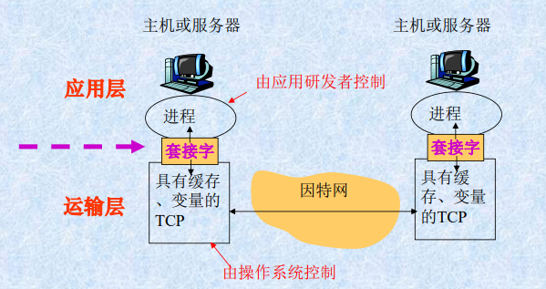
进程通过套接字在网络上发送和接收报文
一些说明
网络上有多个主机，每个主机有多个进程
进程识别信息:表示哪台主机上的哪一个进程。
进程寻址:根据进程识别信息找到相应进程。
进程识别信息
周知端口：常用的应用程序被指派到固定的端口号
用户与网络应用程序之间的接口
定义了运行在不同端系统上的应用程序进程之间传递报文的格式和方式
具体内容：
说明
公共领域协议，由标准文档RFC定义，如HTTP
专用层协议：如p2p使用的协议
HTTP定义了在浏览器程序和Web服务器程序间传输的报文格式和序列
概念
运输服务
两个运输层协议:
每个协议为调用它们的应用程序提供不同的服务模型。
在创建一个新的因特网应用时,要选择其中一个。
两方面：面向连接的服务、可靠的传输服务
面向连接的服务
划分三阶段
建立连接(握手过程):
传输报文:
拆除连接;
可靠的数据传输服务
拥塞控制
缺陷
TCP和UPD都没有提供任何加密机制。
安全套接字层(Secure Socket Layer, SSL)
不确保最小传输速率:发送进程受拥塞控制机制制约;
不提供时延保证:数据传输的时间不确定。
TCP协议能保证交付所有的数据，但并不保证这些数据传输的速率以及期待的传输时延。
提供最小服务模式运行。
Web ===> World Wide Web
关键技术：
HTML：超文本标记语言，实现信息与信息之间的链接
URL：统一资源定位技术，实现全球信息的精确定位
HTTP：超文本传输协议实现分布式信息共享
Web常用术语
说明
非持续和持续HTTP连接（默认使用）
非持续连接每个TCP连接上只传送一个Web对象，只传送一个请求/响应对，而后者则可以是多个
特点：
TCP连接三次握手
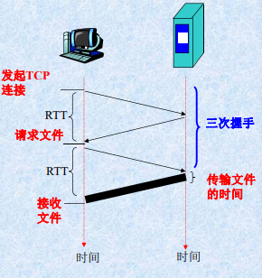
缺点
特点
服务器在发送响应后保持该TCP连接
连接经过一定时间间隔未被使用，服务器就会关闭该连接
两种方式：
非流水线方式：客户机只有在前一个相应接收到后才能发新的请求；会浪费一些资源，出现空闲状态
流水线方式：客户机可以一个接一个连续产生请求，无需接收到响应才发请求：节省RTT时延，空闲时间很短，这是默认方式
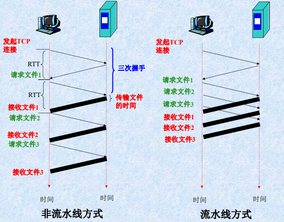
HTTP请求报文格式
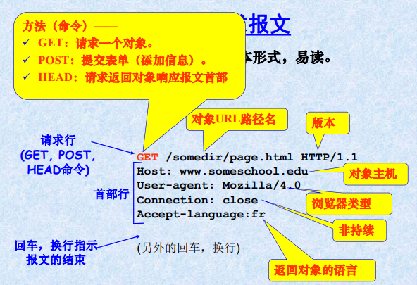
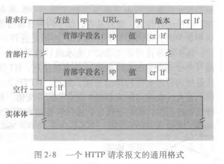
HTTP响应报文
图示
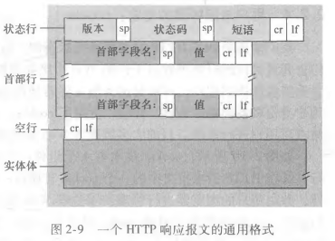
状态码
HTTP服务器是无状态的,不保存客户信息。
Cookie:允许Web站点跟踪、识别用户;服务器可以限制用户访问,或把内容与用户身份关联。
许多重要的Web站点使用cookies.包括四个部分
工作过程
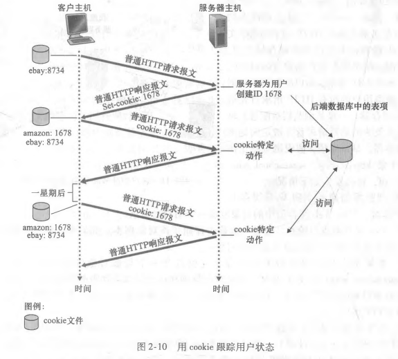
用途和缺陷
用途
缺陷
概念
Web缓存器(Web cache):也叫代理服务器，目标是代替初始服务器满足HTTP请求
初始（原始）服务器(origin server):对象最初存放并始终保持其拷贝的服务器。
使用
客户机通过Web缓存器请求对象
用户配置浏览器:所有Web访问经由Web缓存器
浏览器向Web缓存器发送所有HTTP请求
说明
优点
减少客户机请求的响应时间:
减少机构内部网络与因特网连接链路上的通信量:
与高速缓存对比
高速缓存:
条件GET方法:
使用
Web服务器回发响应报文:包括对象的最后修改时间，缓存器就保存起来
再次请求时，缓存检查Web服务器中的该对象是否已被修改,发送一个条件GET请求报文:告诉服务器,仅当自指定日期之后该对象被修改过,才发送该对象。
若Web服务器中的该对象未被修改，则响应报文含有304 Not Modified，并且实体为空。
缓存器直接转发以存储的对象拷贝
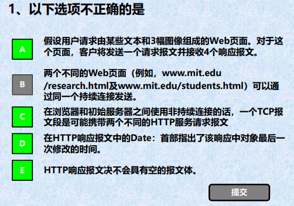
需要发送四个请求报文；非持续连接中一个TCP只能有一个请求；Date是请求时间，last-modified才是最后一次修改时间；HEAD请求就只返回头部，没有报文体
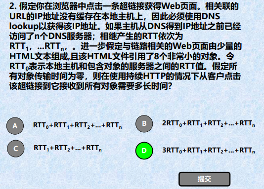
获得IP地址，需要等待n个DNS服务结束，即所有RTT1-n之和；
然后建立连接一个RTT0，接收到HTML一个RTT0，然后接收到HTML解析后，再请求引入的对象，由于是持续连接，且传输时间为零，所有8个小对象只需要一个RTT0
本地主机上的用户，向远程主机上上传或下载文件
用户通过一个FTP用户代理与FTP服务器交互
用户提供远程主机的主机名：本地主机的FTP客户机进程和FTP服务器进程之间建立TCP服务
提供用户标识和口令
服务器验证之后，，进行文件传送（双向：上传或下载）
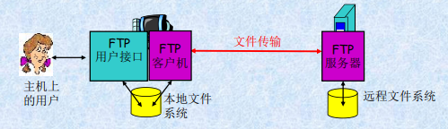
用于在两主机间传输控制信息(如用户标识、口令等)
FTP会话开始前，FTP的客户机与服务器在21号端口上建立。
FTP的客户机通过该连接发送用户标识和口令,或改变远程目录的命令。
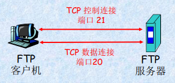
用于准确传输文件
当服务器收到一个文件传输的命令后(从远程主机上读或写),在20端口发起一个到客户机的数据连接。
在该数据连接上传送一个文件并关闭连接。
控制连接是持续的:在整个用户会话期间一直保持;
数据连接是非持续的:会话中每进行一次文件传输,都需要建立一个新的数据连接。
总体结构，三部分
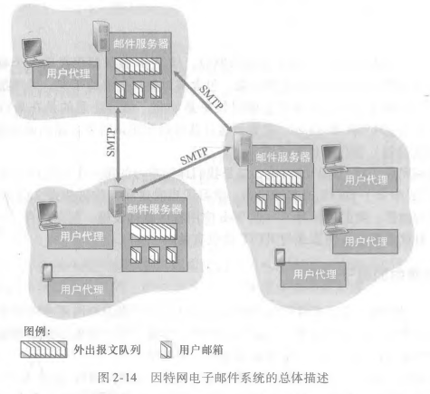
1、用户代理
2、邮件服务器
邮箱：管理和维护用户的报文
报文队列：用户要发出的邮件报文
邮件发送主要过程:
3、SMTP
应用层协议
25号端口
使用TCP可靠数据连接
用于把一封邮件从发送邮件服务器传送到接收邮件服务器
包括两部分：客户机端（发送方邮件服务器运行）和服务器端（接收方运行）
SMTP不使用中间邮件服务器发送邮件，即 TCP 连接是从发送方到接收方的直接相连
相同点
都用于从一台主机向另一台主机传送文件
持续:HTTP和SMTP都使用持续连接。
区别
SMTP只适用于把邮件报文推出去，但是用户从邮件服务器上拉取接收到的邮件是垃操作，只能采用别的协议
POP3
简单，功能有限，服务器不保存读取过的邮件
在用户代理打开了一个到邮件服务器(服务器)端口110上的TCP连接后,开始工作。
工作三阶段
IMAP
未发出删除命令，邮件将一直保存，实现复杂
在用户的PC机上运行IMAP客户程序,然后与ISP的邮件服务器上的IMAP服务器程序建立TCP连接。
用户在自己的PC机上就可以操纵邮件服务器的邮箱,就像在本地操纵一样,是一个联机协议。
基于Web的电子邮件
使用浏览器收发电子邮件
用户代理是普通的浏览器,用户和其远程邮箱之间的通信通过HTTP进行:
邮件服务器之间发送和接收邮件时,仍使用SMTP。
用户可以在远程服务器上以层次目录方式组织报文。
DNS 域名系统 domain name system
标识主机的两种方式:
主机名:由不定长的字母和数字组成。便于记忆。如www.yahoo.com路由器处理困难。
IP地址:由4个字节组成,有着严格的层次结构。路由器容易处理。
DNS是什么
DNS服务器通常是运行BIND ( Berkeley Internet Name Domain）软件的UNIX 机器。
提供的服务
工作过程
1.某个应用程序调用DNS的客户端,并指明需要被转换的主机名
2.用户主机上的DNS客户端接收到后,向网络中发送一个DNS查询报文
3.经过若干毫秒到若干秒的时延后,用户主机上的DNS客户端接收到一个提供所希望映射的DNS回答报文 4.映射结果被传递到调用DNS客户端的应用程序
DNS查询/回答报文使用UDP数据报,从53号端口发送
从用户主机调用应用程序的角度看，DNS是一个提供简单、直接的转换服务的黑盒子。
简单实现--集中式设计，整个因特网上只有一个DNS服务器，包含所有的映射
优点: 设计简单，具有吸引力
问题:
事实上，DNS是一个在因特网上实现分布式数据库的精彩范例，下面是真正的实现
1、分布式、层次数据库
大致说来，有3种类型的 DNS服务器:根 DNS服务器、顶级域（Top-Level Domain，TLD) DNS服务器和权威DNS服务器。
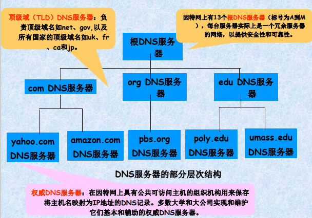
此外，还有一个本地DNS服务器：
两种查询机制
第一种递归查询+迭代查询
1是递归查询，246是迭代查询
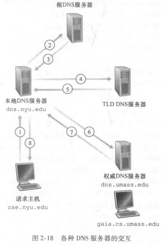
第二种递归查询
1246都是递归查询
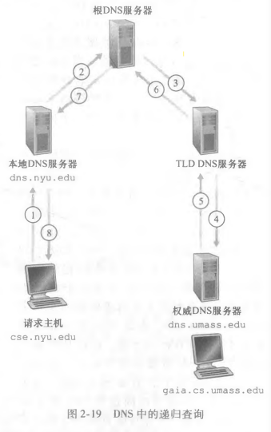
2、DNS缓存
作用
原理
注意
资源记录
共同实现 DNS分布式数据库的所有 DNS服务器存储了资源记录 （Resource Record,RR)，RR提供了主机名到IP地址的映射。每个 DNS回答报文包含了一条或多条资源记录。
资源记录是一个四元组：(Name, Value, Type, TTL)
TTL是该记录的生存时间，它决定了资源记录应当从缓存中删除的时间。Name和Value的值取决于Type;
DNS报文
DNS只有两种报文，并且查询和回答报文是一样的格式
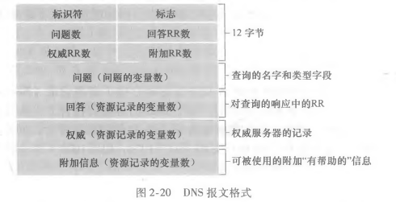
P2P体系结构对总是打开的基础设施服务器有最小的 （或者没有）依赖
在P2P文件分发中，每个对等方能够向任何其他 对等方重新分发它已经收到的该文件的任何部分，从而在分发过程中协助中心服务器服务器
服务器和对等方使用接入链路与因特网相连
分发时间:所有N个对等方得到该文件的副本所需要的时间。
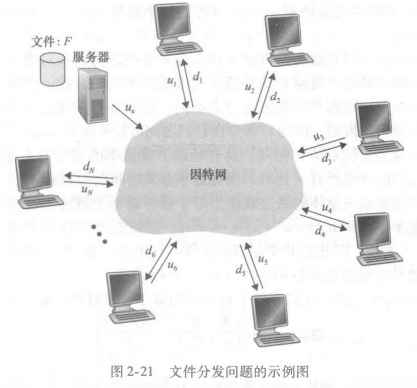
客户-服务器体系结构的分发时间
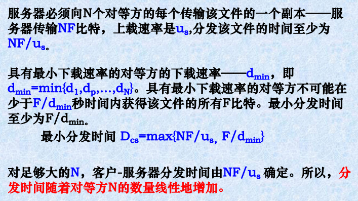
P2P体系结构的分发时间
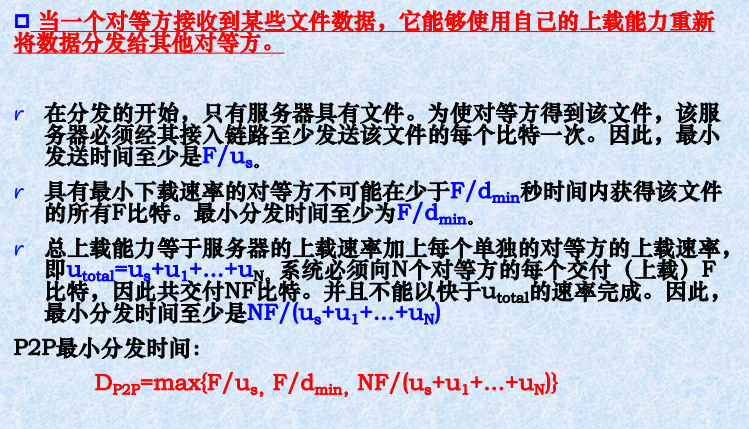
比较两种结构的最小分发时间
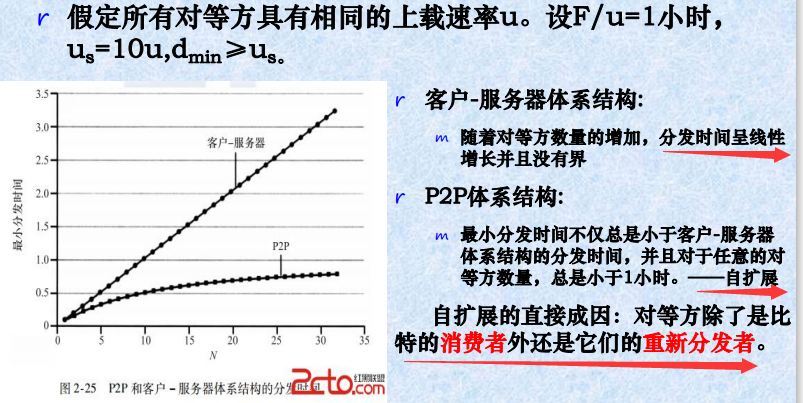
BitTorrent是一种用于文件分发的P2P协议。
洪流(torrent):参与一个特定文件分发的所有对等方的集合。
追踪器:每个洪流所具有的一个基础设施结点。
新对等方Alice加入如何操作？
追踪器随机地从参与对等方的集合中选择对等方的一个子集，并将这些对等方的IP地址发送给Alice
Alice持有对等方的这张列表，试图与该列表上的所有对等方创建并行的TCP连接。我们称所有这样与Alice成功地创建一个TCP连接的对等方为“邻近对等方” 。临近对等方是会随着时间而波动的。
Alice周期性地（经TCP连接）询问每个邻近对等方它们所具有的块列表。有了这个信息，Alice将对她当前还没有的块发出请求（仍通过TCP连接）。
从邻居请求那些块？-最稀缺优先技术
针对她没有的块在她的邻居中决定最稀缺的块(邻居中副本数量最少的块）,并首先请求那些最稀缺的块。
使最稀缺块得到更为迅速的重新分发——(大致地)均衡每个块在洪流中的副本数量。
应当向哪个邻居发送 -对换算法
Alice优先选择以最高速率向他提供数据的邻居。
每过30秒Alice将随机地选择一名新的对换伴侣并开始与那位伴侣进行对换。
除了这5个对等方(“前”4个对等方和一个试探的对等方)的所有其他相邻对等方均被“阻塞”,即它们不能从Alice接收到任何块。
视频流:视频数据的传输,互联网带宽的主要消费者
内容分发网:为了应对分发巨量视频数据的挑战,几乎所有主要的视频流公司都利用内容分发网(Content Distribution Network,CDN)
挑战:规模大，异质性（用户能力不同，带宽不同等）
解决方案:分布式、应用级基础设施
经HTTP的动态适应性流（Dynamic,AdaptiveStreaming over HTTP,DASH)
服务器:
客户(具有主动智能性):
Content Distribution Network
选项一：单一的大型服务器
选项二：在多个地理分布的站点 (CDN) 存储/提供多个视频副本
操作
CDN:在CDN 节点存储内容的副本
订阅者从CDN请求内容
网络应用程序的核心:
网络应用程序类型:
通用应用程序:
专用的应用程序:
面向连接的，为两个端系统之间的数据流动提供可靠的字节流通道
先建立TCP连接,再进行数据传输。
客户机程序是连接的发起方;
服务器必须先准备好,对客户机程序发起的连接做出响应:
建立TCP连接
客户机进程向服务器发起一个TCP连接:
建立一个TCP连接;
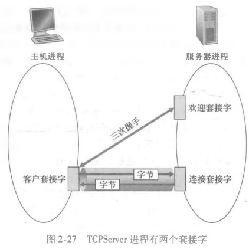
传送数据
TCP连接为客户机和服务器提供了一个直接的传输管道。
可靠的,顺序的,字节流的传输
术语
流:流入或流出某进程的一串字符序列。
输入流:来自某个输入源(如键盘)、或某个套接字(因特网的数据流入套接字)。
输出流:到某个输出源(如显示器)、或某个套接字(数据通过套接字流向因特网)。
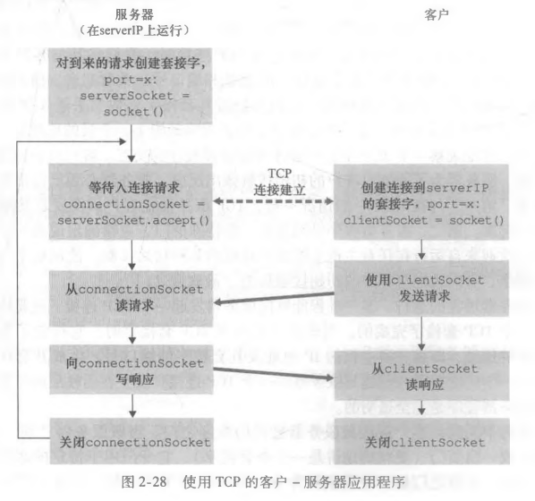
x
1# client.py2from socket import *3serverName = 'servername'4serverPort = 120005clientSocket = socket(AF_INET, SOCK_STREAM)6clientsocket.connect((serverName, serverPort))7sentence = raw_input('Input lowercase sentence:')8clientsocket.send(sentence.encode())9modifiedSentence = clientsocket.recv(1024)10print('From Server: ', modifiedSentence.decode())11cientSocket.close()12
13# server.py14from socket import *15serverPort = 1200016serverSocket = socket(AF_INET, SOCK_STREAM)17serverSocket.bind(('', serverPort))18# 请求连接的最大数19serverSocket.listen(1)20print('The server is ready to receive')21while True:22 connectionSocket, addr = serverSocket.accept()23 sentence = connectionsocket.recv(1024).decode()24 capitalizedSentence = sentence.upper()25 connectionsocket.send(capitalizedSentence.encode())26 connectionSocket.close()
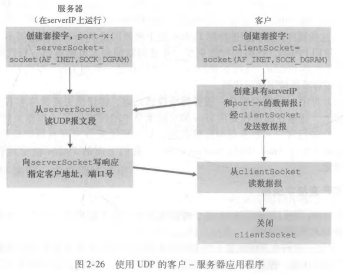
x
1# client.py2from socket import *3serverName = 'hostname'4serverPort = 120005clientsocket = socket(AF_INET, SOCK_DGRAM)6message = raw_input('Input lowercase sentence:')7clientSocket.sendto(message.encode(), (serverName, serverPort))8modifiedMessage, serverAddress = clientsocket.recvfrom(2048)9print(modifiedMessage.decode())10clientSocket.close()11
12# server.py13from socket import *14serverPort = 1200015serverSocket = socket(AF_INET, SOCK_DGRAM)16serversocket.bind(('', serverPort))17print('The server is ready to receivez')18while True: 19 message, clientAddress = serverSocket.recvfrom(2048)20 modifiedMessage = message.decode().upper()21 serverSocket.sendto(modifiedMessage.encode(), clientAddress)